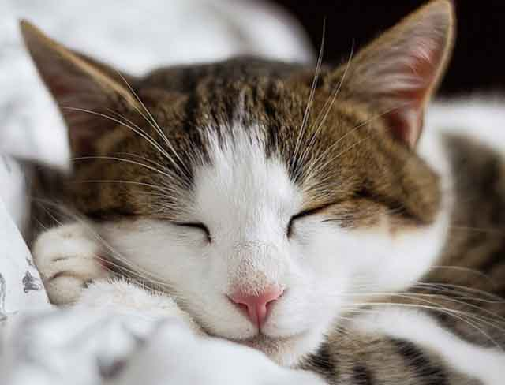
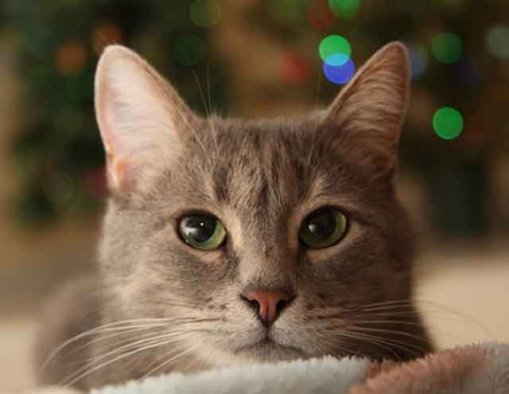
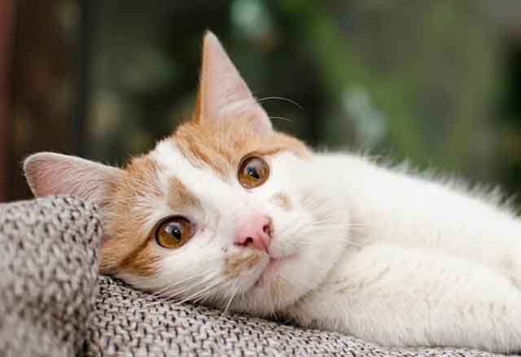
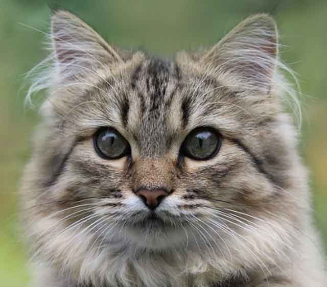
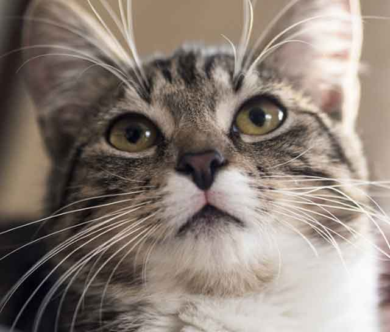

토닥토닥! 고양이가 엉덩이를 두드리는 걸 좋아하는 이유
정신없이 돌아다니다 갑자기 앞으로 찾아온 고양이. 귀여운 모습에 엉덩이를 토닥토닥 두드려주면 점차 올라가는 고양이 엉덩이를 볼 수 있는 데요. 이상한 느낌이 들어 그만두면 어느새 얼굴 앞으로 엉덩이를 들이미는 고양이! 참 신기하면서도 어떻게 하라는 건지 난감할 때가 많죠. 고양이는 엉덩이를 쓰다듬고 만져주는 것을 굉장히 좋아합니다. 그 이유가 궁금하지 않으신가요? 토닥토닥! 고양이가 엉덩이 두드리는 걸 좋아하는 이유. 알아볼까요?
[기쁘고 행복할 때]
고양이는 자신이 행복하고 기쁠 때 그것을 표현하기 위해 엉덩이 쓰다듬는 것을 좋아할 수 있습니다. 예를 들면 화장실을 보고 왔거나 장난감으로 재미난 활동을 하고 난 후에 말이죠. 그 외에도 고양이 스스로가 만족스러운 하루를 보내고 있을 때 언제든지 집사에게 엉덩이를 들이댈 수 있습니다. 고양이가 만족할 때까지 두드려준다면, 아주 날아갈 것 같은 기분을 느낄 수 있을 거예요.
[애정표현]
독립적이고 사람과 어울리지 않는 고양이. 하지만 해가 거듭될수록 고양이가 아닌 '개냥이'가 점점 많아진다는 사실! 고양이가 집사에 대한 무한한 애정으로 먼저 엉덩이를 들이댈 수 있는 데요. 만약 고양이가 갑자기 엉덩이를 들이대고 엉덩이를 높이 치켜세우고 있다면, 만족할 때까지 엉덩이를 두드려주세요. 고양이와의 돈독한 유대관계가 형성될 수 있을 거예요.
[응석받이]
고양이는 어떤 신체 부위든 아주 예민하고 중요하게 생각합니다. 그래서 함부로 사람에게 자신의 몸을 내어주지 않죠. 만약 고양이가 살금살금 다가와 집사에게 엉덩이를 보인다면, 집사를 신뢰하고 믿음을 갖고 있다는 것을 의미합니다. 반려동물에게 엉덩이가 중요한 이유는 자신이 볼 수 없는 부위이기 때문이죠. 그래서 엉덩이를 보여준다는 것은 엄청난 신뢰를 하고 있다는 것! 따라서 갑작스럽게 엉덩이를 들이댄다면 주저하지 말고 엉덩이를 토닥토닥 두드려 주시길 바랍니다.
[흥분한 증거]
고양이의 엉덩이는 생식기와 연결되어 있습니다. 그래서 엉덩이를 두드리면 기분이 좋아지는 것이죠. 톡톡톡-. 두드리는 느낌을 무척 좋아해서 너무 심취한 나머지 집사를 때리거나 물 수도 있어요. 하지만 그것은 집사를 싫어한다는 뜻이 아닌 과하게 기분이 좋아진 상태로 오히려 엉덩이를 두드려 주지 않으면, 쫓아와 엉덩이를 들이댈지도 모른답니다.
고양이의 엉덩이, 꼬리뼈에는 많은 신경이 모여있습니다. 그래서 어떤 신체 부위보다 예민하기도 합니다. 너무 세게 두드리는 것은 좋지 않으며 가볍게 톡톡 건드린다는 느낌으로 만져주는 것이 좋습니다. 고양이가 좋아하는 신체 부위를 적절히 자극해 서로 간의 유대관계를 쌓는 것도 좋겠죠!
[출처] 토닥토닥! 고양이가 엉덩이를 두드리는 걸 좋아하는 이유 ｜ 작성자 펫패밀리